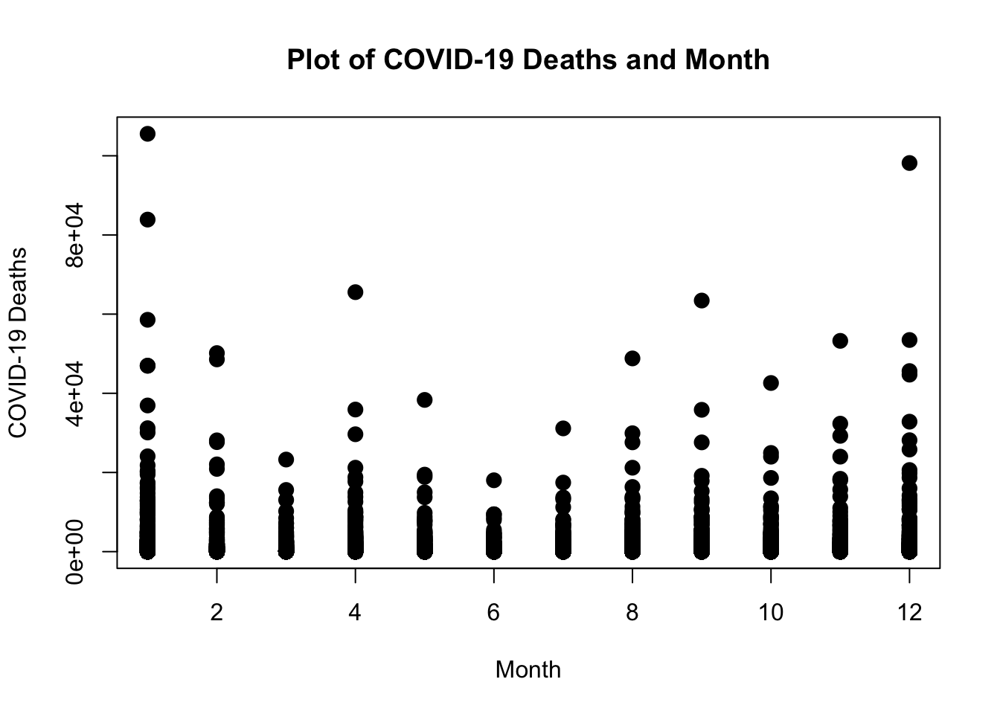
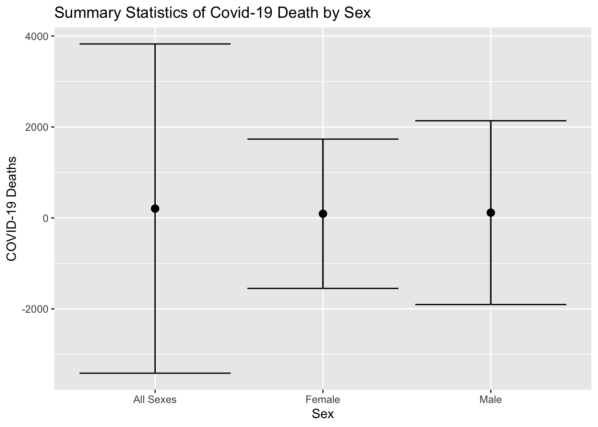
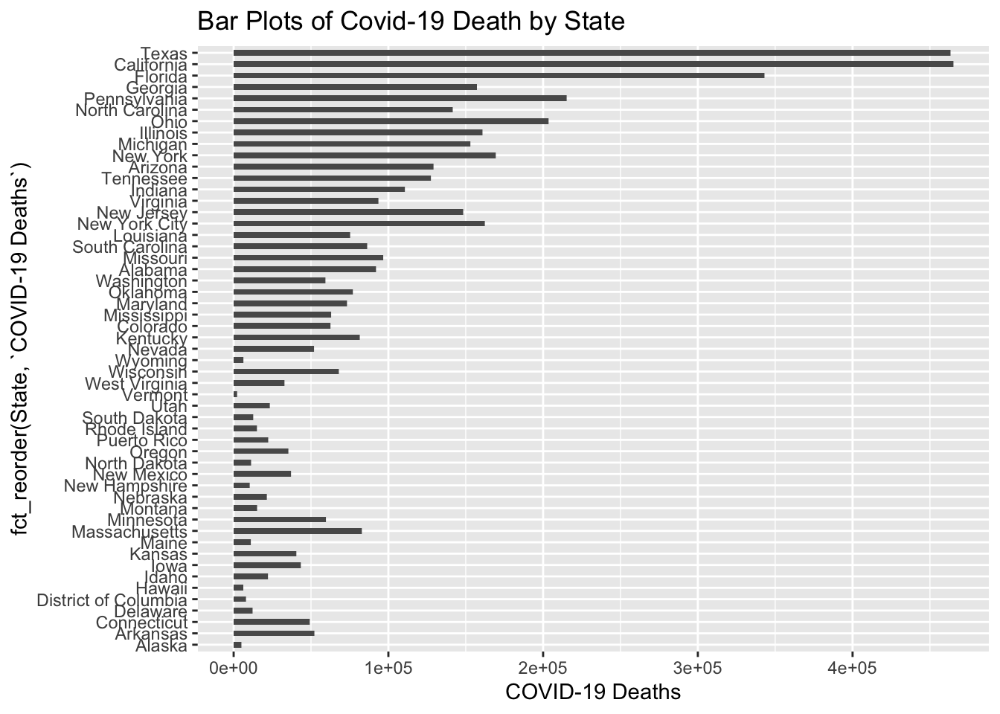
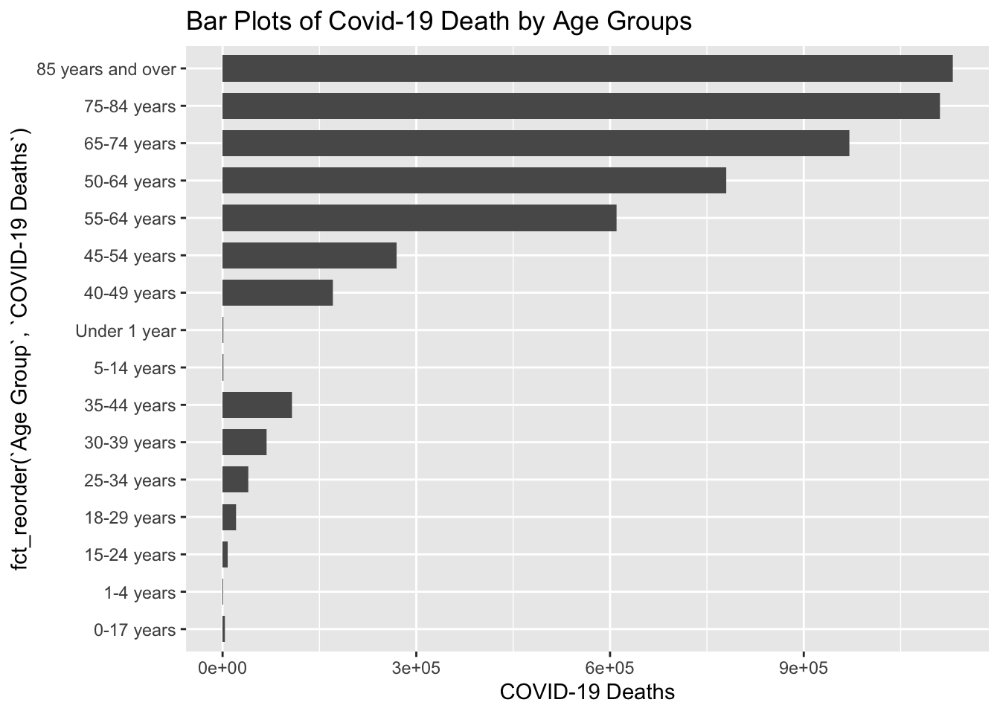
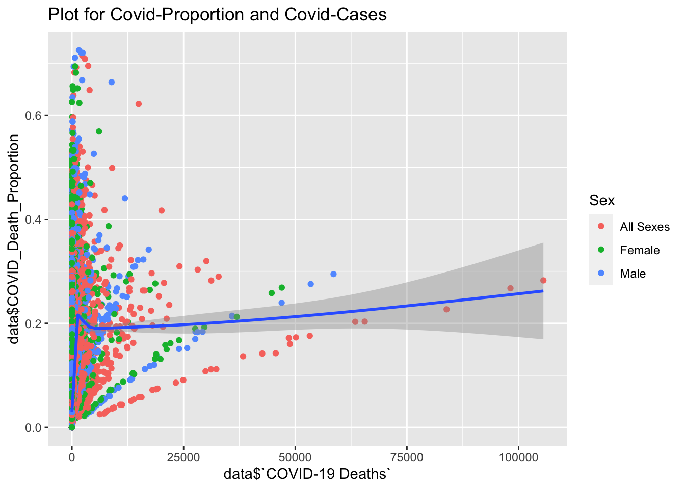
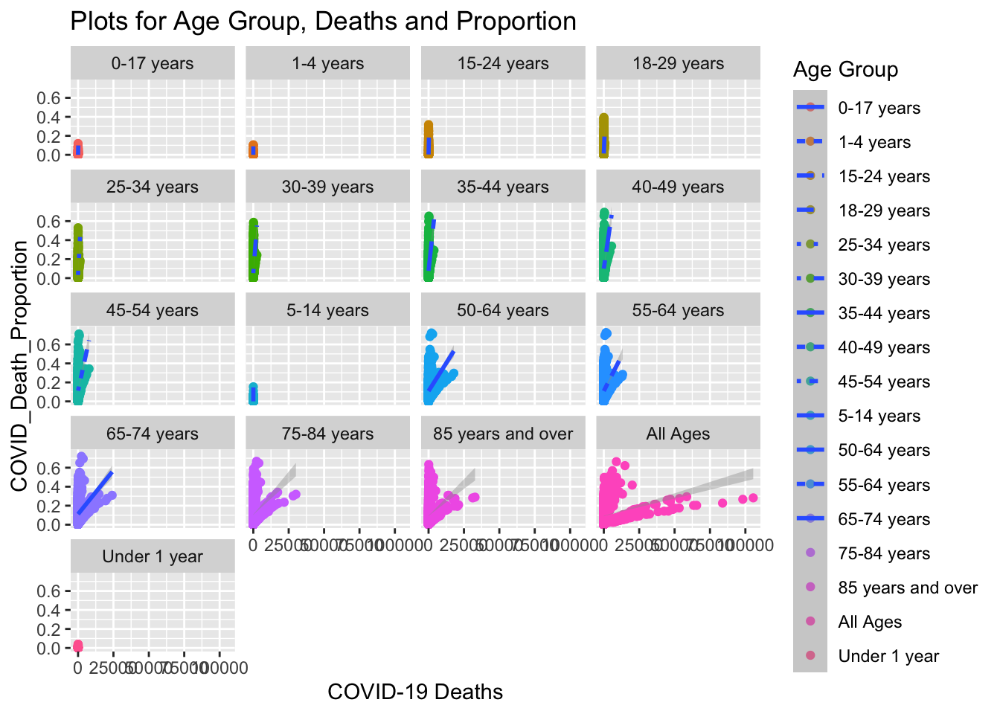

Introduction
Coronavirus disease (COVID-19) is an infectious disease caused by the SARS-CoV-2 virus.Most people infected with the virus will experience mild to moderate respiratory illness and recover without requiring special treatment. However, some will become seriously ill and require medical attention. Anyone can get sick with COVID-19 and become seriously ill or die at any age[1]. This project aimed to discover the US death data of this disease, including the exploratory data analysis about different variables – state, sex, age, pneumonia death, and influenza death. It is significant to find the relationship between these variables and fatalities. Exploring the regularity and distribution of these data may be more conducive to the study of the death rate of this disease.
Methods
The data is downloaded from the database of Centers for Disease Control and Prevention (https://data.cdc.gov/NCHS/Provisional-COVID-19-Deaths-by-Sex-and-Age/9bhg-hcku). The data introduce provisional COVID-19 deaths by sex and age from January 1st, 2020 to October 8th, 2022. Deaths involving coronavirus disease 2019 (COVID-19), pneumonia, and influenza were reported to NCHS by sex, age group, and jurisdiction of occurrence[2]. Read data with data.table::fread().
library(data.table)
data <- data.table::fread("Provisional_COVID-19_Deaths_by_Sex_and_Age.csv")Perform basic overview into the data.
dim(data)## [1] 107406 16It indicates that the data has 104652 rows and 16 columns. Use str()
to check those variables. It has character variables: Data As Of- Date
of analysis, Start Date- First date of data period, End Date-
Last date of data period, Group- Indicator of whether data measured by
Month, by Year, or Total, State- Jurisdiction of occurrence, Sex, Age
Group, Footnote-Suppressed counts (1-9), and integer variables: Year-
Year in which death occurred, Month- Month in which death occurred,
COVID-19 Deaths- Deaths involving COVID-19 (ICD-code U07.1), Total
Deaths- Deaths from all causes of death, Pneumonia Deaths- Pneumonia
Deaths (ICD-10 codes J12.0-J18.9), Pneumonia and COVID-19 Deaths-
Deaths with Pneumonia and COVID-19, Influenza Deaths and Pneumonia,
Influenza, or COVID-19 Deaths- Deaths with Pneumonia, Influenza, or
COVID-19.
Then operate data cleaning and wrangling. Begin with library packages- lubridate, tidyverse and dtplyr.
library(lubridate)
library(tidyverse)
library(dtplyr)We find that the data is composed of two parts: grouped by total and grouped by month. For the convenience of future analytics, we only take the group by-month part.
data <- data[!is.na(Month)]
data <- data[!is.na(Year)]*It is noticed that as we have some NA in COVID-19 Deaths, Total Deaths, Pneumonia and COVID-19 Deaths, Pneumonia and COVID-19 Deaths, Influenza Deaths and Pneumonia, Influenza, or COVID-19 Deaths part. We can check their proportion first.
ratio1 = sum(is.na(data$`COVID-19 Deaths`))/sum(complete.cases(data$`COVID-19 Deaths`))
ratio2 = sum(is.na(data$`Total Deaths`))/sum(complete.cases(data$`Total Deaths`))
ratio3 = sum(is.na(data$`Pneumonia Deaths`))/sum(complete.cases(data$`Pneumonia Deaths`))
ratio4 = sum(is.na(data$`Pneumonia and COVID-19 Deaths`))/sum(complete.cases(data$`Pneumonia and COVID-19 Deaths`))
ratio5 = sum(is.na(data$`Influenza Deaths`))/sum(complete.cases(data$`Influenza Deaths`))
ratio6 = sum(is.na(data$`Pneumonia, Influenza, or COVID-19 Deaths`))/sum(complete.cases(data$`Pneumonia, Influenza, or COVID-19 Deaths`))
c(ratio1,ratio2,ratio3,ratio4,ratio5,ratio6)%>%
knitr::kable()| x |
|---|
| 0.3910095 |
| 0.1873175 |
| 0.4768792 |
| 0.3700908 |
| 0.1764347 |
| 0.4691358 |
From the result shown above, the NA proportion is over 10%. We cannot delete them directly.
To find the proportion of death due to COVID-19 in total number of death. We add a new variable called “COVID-19 Death/Total”.
COVID_Death_Proportion <- data$`COVID-19 Deaths`/data$`Total Deaths`
data <- cbind(data, COVID_Death_Proportion)The next step is to build up some exploratory graphs. We look at some of the key variables first and build up more in the next section.
plot(
data$Month, data$`COVID-19 Deaths`, pch=20, cex=2,
main = "Plot of COVID-19 Deaths and Month",
xlab= "Month", ylab="COVID-19 Deaths")
For the plot shown above, the dots show the distribution of one of the key variables- Covid-19 death by month. The figure shows that the number of covid-19 deaths has higher values at the beginning and the end of years (approximately in winter) and lower values in the middle of years. Surely we will have a more detailed visualization analysis of the data later below.
Preliminary Result We are going to perform some visualization to explore the data set. The figures are about key variables we focus on and find out the regulation and distribution.
library(ggplot2)We can discover the variables about year and month. First, we did a summary of the average covid death cases, and covid proportion each year.
data %>% group_by(Year)%>%
summarise(
Avg_covid_death =mean(`COVID-19 Deaths`, na.rm= TRUE),
Avg_covid_proportion = mean(COVID_Death_Proportion, na.rm =TRUE)
)%>%
knitr::kable()| Year | Avg_covid_death | Avg_covid_proportion |
|---|---|---|
| 2020 | 132.77462 | 0.0642793 |
| 2021 | 180.12917 | 0.1101580 |
| 2022 | 96.48408 | 0.0568177 |
From the summary table, the average number of death cases caused by Covid has decreased by year. However, the proportion of Covid-19 seems higher in 2021 than in 2020 and then goes back to around 6% in 2022. Next step, we build up a violin plot to show the Covid-19 proportion distribution by year.
data%>%
ggplot()+geom_violin(mapping = aes(x=1, y=COVID_Death_Proportion, color=Year, fill=Year))+ facet_wrap(~Year)+ggtitle("Violin Plots of Covid-19 Death Proportion by Year")## Warning: Removed 43367 rows containing non-finite values (stat_ydensity).
It shows that the highest proportion was reported in 2020 and decreased by year, which is comply with the regulation of the table presentation above.
We go on with the sex variable and do some summary first.
data %>% group_by(Sex)%>%
summarise(
Avg_covid_death =mean(`COVID-19 Deaths`, na.rm= TRUE),
Avg_covid_proportion = mean(COVID_Death_Proportion, na.rm =TRUE)
)%>%
knitr::kable()| Sex | Avg_covid_death | Avg_covid_proportion |
|---|---|---|
| All Sexes | 205.70300 | 0.0762266 |
| Female | 91.91869 | 0.0805664 |
| Male | 116.03263 | 0.0783782 |
From the table, male has a higher average than female in Covid-19 death cases but their proportion of death are similar. For deeper analysis, we use stat_summay to examine mean death cases by sex with standard deviation error bars.
data[!is.na(`COVID-19 Deaths`)]%>%
ggplot(mapping = aes(x= `Sex`, y= `COVID-19 Deaths` ))+
stat_summary(fun.data = mean_sdl, geom= "pointrange")+
stat_summary(fun.data = mean_sdl, geom= "errorbar")+ggtitle("Summary Statistics of Covid-19 Death by Sex")
The plots show that the male group, which holds a higher average case number, has a wider range of bars. In this case, they also have a larger standard deviation in death cases caused by Covid-19.
The next step is states, we build up a summary table for average death cases and proportion by the state like before and arrange it by descending order of cases. Texas has the most number of cases.
data %>% group_by(State)%>%
summarise(
Avg_covid_death =mean(`COVID-19 Deaths`, na.rm= TRUE),
Avg_covid_proportion = mean(COVID_Death_Proportion, na.rm =TRUE)
)%>%arrange(desc(Avg_covid_death))%>%
knitr::kable()| State | Avg_covid_death | Avg_covid_proportion |
|---|---|---|
| United States | 2703.024090 | 0.0685317 |
| Texas | 339.349450 | 0.1074259 |
| California | 329.321530 | 0.0811933 |
| Florida | 251.229304 | 0.0783551 |
| Pennsylvania | 164.959356 | 0.0753892 |
| Ohio | 154.023485 | 0.0744282 |
| New York | 134.940989 | 0.0848920 |
| New York City | 125.779070 | 0.1028783 |
| Illinois | 120.731781 | 0.0751669 |
| Georgia | 118.219880 | 0.0863119 |
| Michigan | 117.787972 | 0.0799725 |
| New Jersey | 110.636567 | 0.0916264 |
| North Carolina | 107.541445 | 0.0735949 |
| Arizona | 97.564626 | 0.1047428 |
| Tennessee | 94.705357 | 0.0785762 |
| Indiana | 87.794118 | 0.0805142 |
| Missouri | 75.112150 | 0.0747855 |
| Virginia | 73.203602 | 0.0679021 |
| Alabama | 70.574942 | 0.0862706 |
| South Carolina | 67.486296 | 0.0836647 |
| Massachusetts | 66.011981 | 0.0629065 |
| Louisiana | 61.187958 | 0.0861103 |
| Oklahoma | 60.772943 | 0.1012956 |
| Kentucky | 59.831741 | 0.0773255 |
| Maryland | 57.433176 | 0.0755111 |
| Wisconsin | 53.285377 | 0.0641920 |
| Colorado | 49.444885 | 0.0774832 |
| Mississippi | 48.553751 | 0.1004966 |
| Minnesota | 47.301752 | 0.0661164 |
| Washington | 46.689574 | 0.0561815 |
| Arkansas | 41.017323 | 0.0825546 |
| Nevada | 40.783123 | 0.1063437 |
| Connecticut | 38.960254 | 0.0746780 |
| Iowa | 34.308181 | 0.0768354 |
| Kansas | 32.559322 | 0.0816172 |
| New Mexico | 30.181818 | 0.1200209 |
| Oregon | 27.600939 | 0.0520466 |
| West Virginia | 24.260579 | 0.0683336 |
| Puerto Rico | 19.319408 | 0.0537693 |
| Utah | 19.233251 | 0.0706495 |
| Nebraska | 17.658960 | 0.0710675 |
| Idaho | 17.072317 | 0.0804971 |
| Rhode Island | 11.827751 | 0.0882897 |
| Montana | 11.819685 | 0.0819718 |
| South Dakota | 10.609881 | 0.0888342 |
| Delaware | 9.815961 | 0.0733633 |
| North Dakota | 9.379019 | 0.0969374 |
| Maine | 8.657371 | 0.0415997 |
| New Hampshire | 7.829398 | 0.0447065 |
| District of Columbia | 7.121157 | 0.0744739 |
| Hawaii | 4.991694 | 0.0431187 |
| Wyoming | 4.853717 | 0.0854411 |
| Alaska | 4.090678 | 0.0572232 |
| Vermont | 1.545782 | 0.0175733 |
To make it more clear, a bar chart is shown below. In this figure, Texas and California have the longest bar and Vermont has the shortest.
subset <- data[!(State == "United States")]
subset[!is.na(`COVID-19 Deaths`)]%>%
ggplot(aes(x= `COVID-19 Deaths`, y=fct_reorder(State, `COVID-19 Deaths`)))+geom_col(width = 0.5)+ggtitle("Bar Plots of Covid-19 Death by State")
Have a look at age groups. Repeat the same actions to average Covid deaths and proportions and arrange them by descending order of covid death. It is noticeable that the cases number increases with age increasing. The older the age group, the larger number of deaths caused by Covid-19. We also noticed the proportion increase, it is feasible to find a correlation later but it may also relate to some other reasons.
data %>% group_by(`Age Group`)%>%
summarise(
Avg_covid_death =mean(`COVID-19 Deaths`, na.rm= TRUE),
Avg_covid_proportion = mean(COVID_Death_Proportion, na.rm =TRUE)
)%>%arrange(desc(Avg_covid_death))%>%
knitr::kable()| Age Group | Avg_covid_death | Avg_covid_proportion |
|---|---|---|
| All Ages | 800.1468727 | 0.0952294 |
| 85 years and over | 238.2041719 | 0.0973142 |
| 75-84 years | 237.5212834 | 0.1095293 |
| 65-74 years | 215.3342210 | 0.1148732 |
| 50-64 years | 183.2101551 | 0.1128847 |
| 55-64 years | 149.1785714 | 0.1137297 |
| 45-54 years | 80.4908710 | 0.1183402 |
| 40-49 years | 55.6111655 | 0.1059312 |
| 35-44 years | 37.2105080 | 0.0825839 |
| 30-39 years | 23.7074711 | 0.0581430 |
| 25-34 years | 13.4671433 | 0.0376264 |
| 18-29 years | 6.3843976 | 0.0174928 |
| 15-24 years | 1.9261886 | 0.0057131 |
| 0-17 years | 0.7114606 | 0.0009138 |
| 5-14 years | 0.1708683 | 0.0031606 |
| Under 1 year | 0.1512473 | 0.0002411 |
| 1-4 years | 0.0782543 | 0.0039161 |
Perform a bar chart again to show the trend. The number of Covid-19 deaths among older age groups is much higher than among younger age groups, and there is a trend of increasing with age.
subset2 <- data[!(`Age Group` == "All Ages")]
subset2[!is.na(`COVID-19 Deaths`)]%>%
ggplot(aes(x= `COVID-19 Deaths`, y=fct_reorder(`Age Group`, `COVID-19 Deaths`)))+geom_col(width = 0.7)+ggtitle("Bar Plots of Covid-19 Death by Age Groups")We can also do some correlation analysis. The figure below shows the trending between the proportion of death caused by covid and the covid death cases. The color indicates the sex group. Different colors represent different sex. From the line, we cannot have a specific conclusion about the correlation.
data[!is.na(Sex)]%>%
ggplot(mapping = aes(x=data$`COVID-19 Deaths`, y= data$COVID_Death_Proportion))+ geom_point(mapping = aes(color= Sex))+geom_smooth()+ggtitle("Plot for Covid-Proportion and Covid-Cases")## `geom_smooth()` using method = 'gam' and formula 'y ~ s(x, bs = "cs")'## Warning: Removed 43367 rows containing non-finite values (stat_smooth).## Warning: Removed 43367 rows containing missing values (geom_point).
data%>%
ggplot(mapping = aes(x= `COVID-19 Deaths`, y=`COVID_Death_Proportion`))+geom_point(mapping = aes(color= `Age Group`))+geom_smooth(method=lm, mapping = aes(linetype= `Age Group`))+facet_wrap(~`Age Group`, nrow=5)+ggtitle("Plots for Age Group, Deaths and Proportion")## `geom_smooth()` using formula 'y ~ x'## Warning: Removed 43367 rows containing non-finite values (stat_smooth).## Warning: Removed 43367 rows containing missing values (geom_point).
This figure is another exploration of correlation by age groups. It indicates that among the older age groups, there might be a correlation between death cases and proportions. Future research is required on these questions.
At last, we do some summary about other integer variables. Just for your information
s1 <- summary(data$'COVID-19 Deaths')
s2 <- summary(data$`Total Deaths`)
s3 <- summary(data$`Pneumonia Deaths`)
s4 <- summary(data$`Pneumonia and COVID-19 Deaths`)
s5 <- summary(data$`Influenza Deaths`)
s6 <- summary(data$`Pneumonia, Influenza, or COVID-19 Deaths`)
s7 <- summary(data$COVID_Death_Proportion)
rbind(s1, s2, s3, s4, s5, s6, s7)%>%
knitr::kable()| Min. | 1st Qu. | Median | Mean | 3rd Qu. | Max. | NA’s | |
|---|---|---|---|---|---|---|---|
| s1 | 0 | 0 | 0.0000000 | 138.3192150 | 44.0000000 | 1.055510e+05 | 27095 |
| s2 | 0 | 37 | 126.0000000 | 1081.7001589 | 502.0000000 | 3.736410e+05 | 15207 |
| s3 | 0 | 0 | 14.0000000 | 135.9907915 | 59.0000000 | 6.984800e+04 | 31124 |
| s4 | 0 | 0 | 0.0000000 | 68.8734667 | 20.0000000 | 5.541000e+04 | 26037 |
| s5 | 0 | 0 | 0.0000000 | 1.1096248 | 0.0000000 | 2.437000e+03 | 14456 |
| s6 | 0 | 0 | 21.0000000 | 209.1407103 | 87.0000000 | 1.200700e+05 | 30780 |
| s7 | 0 | 0 | 0.0436681 | 0.0782282 | 0.1222222 | 7.247243e-01 | 43367 |
Conclusion
In this project, we mainly deal with the data set describing the death data of Covid-19 disease by time, state, sex, and age groups. Our objective is to find the distribution and regulation of different variables versus death data. After a series of analyses, we have some preliminary answers to questions. The number of Covid-19 deaths is higher at the beginning and the end of years and lower values in the middle of years. We may reference the regulation related to season factors. The death cases increased in winter. For years, the average number of death cases caused by Covid-19 has decreased by year. This trend didn’t apply to the proportions of death caused by Covid in the total death numbers. The highest proportion was reported in 2020 and decreased by the year. With different sex, the male has a higher average than female in Covid-19 death cases but their proportion of death are similar. They also have a larger standard deviation in death cases caused by Covid-19. On the scope of states, Texas and California hold the most Covid-19 cases. For the age group, the cases number increases with age increasing. The older the age group, the larger number of deaths caused by Covid-19. We also noticed the proportion increase, it is feasible to find a correlation later but it may also relate to some other reasons. Later explore about correlations make me find correlations by age group. There might be a correlation between death cases and proportions in the older age group but future research is necessary.
Reference List
[1]World Health Organizations, https://www.who.int/health-topics/coronavirus#tab=tab_1.
[2]Centers for Disease Control and Prevention, https://data.cdc.gov/NCHS/Provisional-COVID-19-Deaths-by-Sex-and-Age/9bhg-hcku.
Copyright © 2020, Chen Chen.